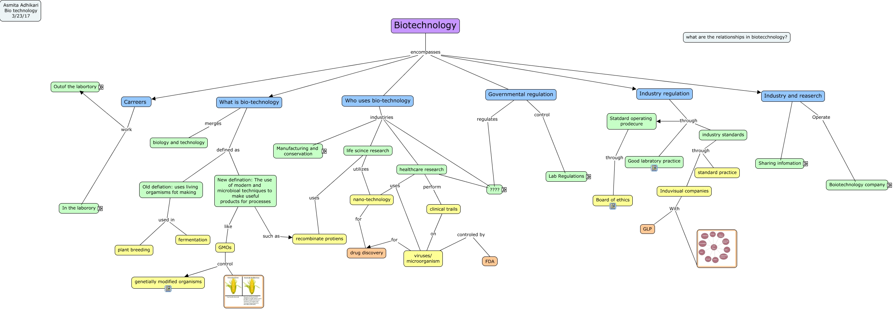

WARNING:
JavaScript is turned OFF. None of the links on this concept map will
work until it is reactivated.
If you need help turning JavaScript On, click here.
This Concept Map, created with IHMC CmapTools, has information related to: biotechnology, New defination: The use of modern and microbioal techniques to make useful products for processes such as recombinate protiens, viruses/ microorganism controled by FDA, Manufacuring such as coservation/ waste management, Carreers work Out of the labortory, Out of the labortory work as graphic desighners, GMOs control genetially modified organisms, coservation/ waste management using emzynes, For profit Needs to sell products, Lab regulation by Company standards, Old defiation: uses living orgamisms fot making used in fermentation, Industry and reaserch Share information Meeting, life scince research industiries Food Industry, clinical trails on viruses/ microorganism, Industry regulation through Statdard operating prodecure, In the labrotory Work as Laborotry technician, coservation/ waste management by DNA Profiling, GMOs control, Company standards with Good manufatcuring practices, Food Industry from GMO, Induvisual companies With
